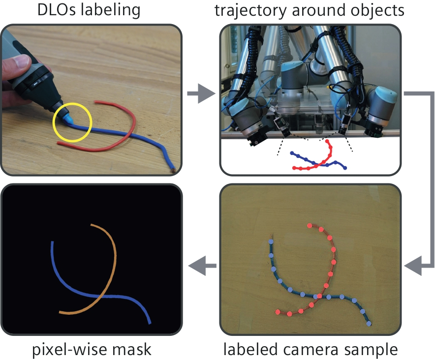
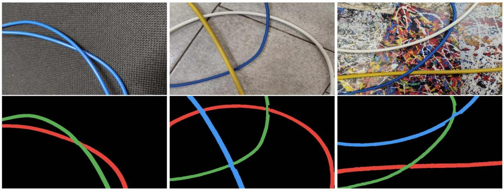
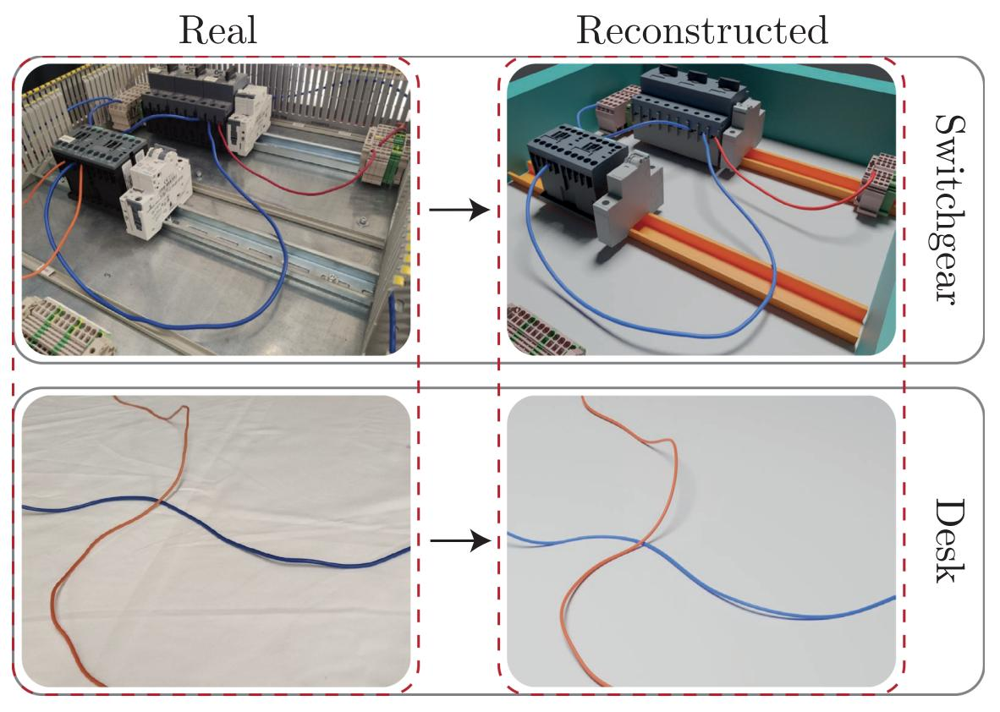
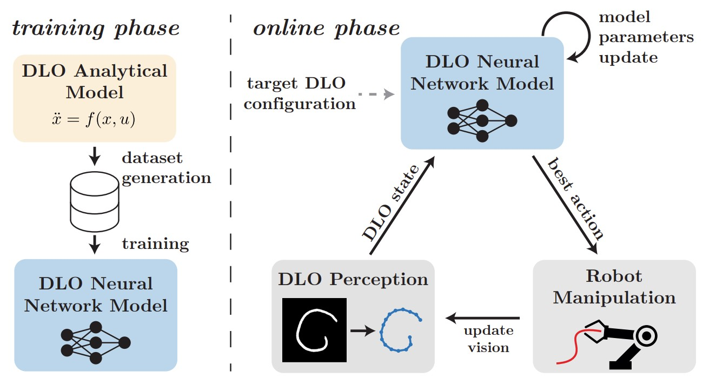

Short Bio
Junior Assistant Professor (fixed-term) at the University of Bologna since 2024, working at the intersection of robotics and machine learning. In April 2024, I successfully defended my PhD thesis titled 'Robotic Perception and Manipulation of Deformable Linear Objects', advised by Prof. Gianluca Palli.
Research Interests
My research focuses on the perception and manipulation of deformable objects, aiming to advance the capabilities of robotic systems in handling complex objects. My primary research interests include computer vision and tactile sensing, which involve developing algorithms to enhance a robot's understanding of target objects and their environment; robotic manipulation, particularly addressing tasks such as grasping, sliding, and motion planning; deformable object modeling, to predict and control their behavior; and deep learning for physical systems, leveraging neural network approximations of dynamical systems to facilitate robotic tasks.
My Research on Deformable Linear Objects

Vision-based Dataset Generation
- Auto-generated Wires Dataset for Semantic Segmentation with Domain-Independence
- A Weakly Supervised Semi-Automatic Image Labeling Approach for Deformable Linear Objects

2D Perception
- Ariadne+: Deep Learning--Based Augmented Framework for the Instance Segmentation of Wires
- FASTDLO: Fast Deformable Linear Objects Instance Segmentation
- RT-DLO: Real-Time Deformable Linear Objects Instance Segmentation

3D Perception
- Deformable Linear Objects 3D Shape Estimation and Tracking From Multiple 2D Views
- 3D DLO Shape Detection and Grasp Planning from Multiple 2D Views

Manipulation
- Deformable Linear Objects Manipulation With Online Model Parameters Estimation
Publications
Check also my Google Scholar profile for the most updated list of publications:
Google Scholar profile
Journal Papers
- A. Caporali, P. Kicki, K. Galassi, R. Zanella, K. Walas and G. Palli, "Deformable Linear Objects Manipulation With Online Model Parameters Estimation," in IEEE Robotics and Automation Letters, 2024
- A. Caporali, K. Galassi and G. Palli, "Deformable Linear Objects 3D Shape Estimation and Tracking From Multiple 2D Views," in IEEE Robotics and Automation Letters, 2023
- A. Caporali, K. Galassi, B. L. Žagar, R. Zanella, G. Palli and A. C. Knoll, "RT-DLO: Real-Time Deformable Linear Objects Instance Segmentation," in IEEE Transactions on Industrial Informatics, 2023
- A. Caporali, M. Pantano, L. Janisch, D. Regulin, G. Palli and D. Lee, "A Weakly Supervised Semi-Automatic Image Labeling Approach for Deformable Linear Objects," in IEEE Robotics and Automation Letters, 2023
- A. Caporali, K. Galassi, R. Zanella and G. Palli, "FASTDLO: Fast Deformable Linear Objects Instance Segmentation,"in IEEE Robotics and Automation Letters, 2023
- R. Meattini, A. Caporali, A. Bernardini, G. Palli and C. Melchiorri, "Self-Supervised Regression of sEMG Signals Combining Non-Negative Matrix Factorization With Deep Neural Networks for Robot Hand Multiple Grasping Motion Control," in IEEE Robotics and Automation Letters, 2023
- A. Caporali, R. Zanella, D. De Gregorio and G. Palli, "Ariadne+: Deep Learning--Based Augmented Framework for the Instance Segmentation of Wires," in IEEE Transactions on Industrial Informatics, 2022
Conference Papers
- B. L. Žagar, A. Caporali et al., "Copy and Paste Augmentation for Deformable Wiring Harness Bags Segmentation," IEEE/ASME International Conference on Advanced Intelligent Mechatronics (AIM), 2023
- D. Chiaravalli, A. Caporali, A. Friz, R. Meattini and G. Palli, "A Vision-based Shared Autonomy Framework for Deformable Linear Objects Manipulation," IEEE/ASME International Conference on Advanced Intelligent Mechatronics (AIM), 2023
- K. Galassi, A. Caporali and G. Palli, "Cable Detection and Manipulation for DLO-in-Hole Assembly Tasks," IEEE 5th International Conference on Industrial Cyber-Physical Systems (ICPS), 2022
- A. Caporali, K. Galassi and G. Palli, "3D DLO Shape Detection and Grasp Planning from Multiple 2D Views," IEEE/ASME International Conference on Advanced Intelligent Mechatronics (AIM), 2021
- A. Caporali, K. Galassi, G. Laudante, G. Palli and S. Pirozzi, "Combining Vision and Tactile Data for Cable Grasping," IEEE/ASME International Conference on Advanced Intelligent Mechatronics (AIM), 2021
- A. Caporali, W. B. Bedada and G. Palli, "A Cyber-Physical System for Clothes Detection, Manipulation and Washing Machine Loading," 4th IEEE International Conference on Industrial Cyber-Physical Systems (ICPS), 2021
- R. Zanella, A. Caporali, K. Tadaka, D. De Gregorio and G. Palli, "Auto-generated Wires Dataset for Semantic Segmentation with Domain-Independence," 2021 International Conference on Computer, Control and Robotics (ICCCR), 2021
- A. Caporali and G. Palli, "Pointcloud-based Identification of Optimal Grasping Poses for Cloth-like Deformable Objects," 25th IEEE International Conference on Emerging Technologies and Factory Automation (ETFA), 2020
{kind=link}
{kind=link}
{kind=link}
{kind=link}